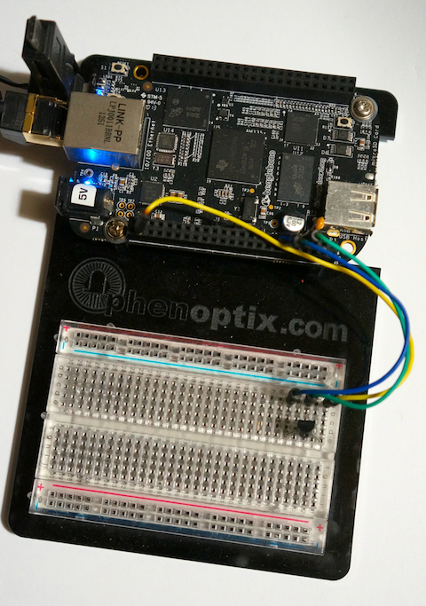

Talking Small
Using Eclipse Paho's MQTT on BeagleBone Black and Raspberry Pi
by Dj Walker-Morgan
How would you connect the information from a temperature sensor on a BeagleBone Black to an LED display on a Raspberry Pi and would your solution scale up to many sensors and displays? In this article we’ll show how MQTT and the Eclipse Paho project can let you answer that challenge.
The arrival of the Raspberry Pi and the BeagleBone Black has heralded a time when a small Linux-powered board can easily, and economically, make sense as a complex sensor or display in the Internet of Things. It also means that developers can end up using web technology that's not suited to the Internet of Things, where the connections may only be occasionally available and as reliable as a cellphone call and where devices need to sip power while sending and receiving information.
This is where MQTT comes in to take on these connectivity problems and open up a whole realm of possibilities for developers to create smarter, more connected applications. MQTT is a system, and a network protocol, for broadcasting and listening for information over networks. Designed as a complement to enterprise messaging systems, MQTT is a lightweight publish and subscribe protocol. The idea with what was called at the time, Message Queuing Telemetry Transport, to fill the gap between the numerous devices and applications that could produce data and the wider world of data consumers. As these devices were typically outside of the corporate network the protocol needed to be resilient to network issues. Now, known just as MQTT (with no acronym), the most recent version, MQTT 3.1, is being used as OASIS’s standard for messaging for the internet of things, further extending MQTT’s industry support and alongside that work, the Eclipse Foundation’s M2M project is curating open source versions of components for MQTT-based systems.

In practice, MQTT lets developers write applications which publish their data as messages to the MQTT network without worrying themselves with how other applications will receive that data. The messages are published to topics, strings which can resemble filesystem paths, like “/rooms/a1/environment/temperature” or “/raspberrypi/status” or “/beaglebone/running/process”. This message data – the payload – is most typically small packets, but MQTT is flexible enough to allow it to be as much as 256MB. The MQTT overhead itself is as little as two bytes over the payload and topic and the load on clients is small as the broker takes over the heavier lifting of redistributing messages.
Other developers can write applications that select which topics, or wildcard-based ranges of topics they will then receive messages for. These are the subscribers. There’s nothing to stop a client being both a publisher and a subscriber though. Bringing the two sides together and providing the glue of an MQTT network are the MQTT brokers. These are applications built to route, or retain, messages between publishing and subscribing clients. Getting building – a publishing sensor
These concepts are best demonstrated so let’s start building our temperature sensor. We’re doing this on the BeagleBone Black. It’s a pretty self-contained device so you just need to add power and network and ssh to “root@beaglebone.local” to log into one fresh out of the box. You can, of course, attach a monitor and use a GUI on the BeagleBone Black - or the Raspberry Pi, which we will come to later - but here we are keeping hardware and software tooling requirements to a minimum so we can focus on MQTT.
To attach a temperature sensor to a BeagleBone Black, we have followed the tutorial created by Simon Monk for the AdaFruit Learning System. The electronics are very simple and connect the three pins of a TMP36 temperature sensor to an analogue input on the BeagleBone Black. The software side involves installing and using an AdaFruit library to read the value and we end up running a Python program similar to this:
import Adafruit_BBIO.ADC as ADC
import time
sensor_pin = 'P9_40'
ADC.setup()
while True:
reading = ADC.read(sensor_pin)
millivolts = reading * 1800 # 1.8V reference = 1800 mV
temp_c = (millivolts - 500) / 10
print('mv=%.2f C=%.2f' % (millivolts, temp_c)
time.sleep(1)
So now we have a source of temperature data. Now we can MQTT enable this program. Our first stop is the Eclipse Paho project where MQTT client libraries for various languages have been assembled. There you can find the Paho Python library, but as it is yet to be formally packaged and released, we will need to build it. To build it for the BeagleBone Black’s Angstrom Linux distribution we first need to download the source code using git:
git clone https://github.com/eclipse/paho.mqtt.python.git org.eclipse.paho.mqtt.python.git
This will create a copy of the repository in the directory “org.eclipse.paho.mqtt.python”. If we now move into that directory we can get on with building the code:
cd org.eclipse.paho.mqtt.python
make
make install
With the Paho MQTT library built, we can return to our Python code and start adding the basic elements. The first thing to do is to import the library:
import Adafruit_BBIO.ADC as ADC
import time
import paho.mqtt.client as mqtt
Now we can set up the client connection to the broker:
mqttc = mqtt.Client()
mqttc.connect("m2m.eclipse.org", 1883, 60)
mqttc.loop_start()
Here we create our client and tell it to connect to m2m.eclipse.org. That’s the Eclipse public sandbox for M2M developers which has been created to let people experiment with M2M without setting up their own broker. That said, you can easily set up a broker with Mosquitto (http://mosquitto.org/), the open source dedicated MQTT broker, if you wish. Other brokers are available, but it’s worth noting that Mosquitto is also becoming an Eclipse M2M project.
The connection to the broker is made over port 1883 and the connection will be kept alive with a 60 second ping in the absence of any other activity. The code also starts up a thread to handle incoming messages from the broker with the loop_start method. We are now almost ready to send messages to the broker, but before we do that, we need come up with a topic. We shall start with a root name of “bbbexample” for our topics, then have a subtopic “tmp36” to represent the temperature sensor and two sub-subtopics “mv” and “c” to represent the milli-volt and centigrade readings from that sensor. This will give us two absolute topics “bbbexample/tmp36/mv” and “bbbexample/tmp36/c”. Remember though, that if you are working in a shared sandbox like m2m.eclipse.org, you will want to change “bbbexample” to something unique to you (and the broker) or risk having your readings overwritten by another person.
With topics selected, once we’ve printed the millivolt and centigrade temperature readings we can add:
mqttc.publish("bbbexample/tmp36/mv","%.2f" % millivolts);
mqttc.publish("bbbexample/tmp36/c","%.2f" % temp_c);
Formatting the values to two decimal places for tidiness. This gives us our complete program:
import time
import Adafruit_BBIO.ADC as ADC
import paho.mqtt.client as mqtt
sensor_pin = 'P9_40'
ADC.setup()
mqttc = mqtt.Client()
mqttc.connect("m2m.eclipse.org", 1883, 60)
mqttc.loop_start()
while True:
reading = ADC.read(sensor_pin)
millivolts = reading * 1800 # 1.8V reference = 1800 mV
temp_c = (millivolts - 500) / 10
print('mv=%.2f C=%.2f' % (millivolts, temp_c))
mqttc.publish("bbbexample/tmp36/mv","%.2f" % millivolts);
mqttc.publish("bbbexample/tmp36/c","%.2f" % temp_c);
time.sleep(1)
And running that should publish values to the Eclipse sandbox every second. To check this is happening without writing a client, we can make use of one feature of the Eclipse M2M sandbox, the Eclipse MQTT Bridge (at eclipse.mqttbridge.com), which presents the contents of a sandbox in easily consumable web formats. By using the curl utility, it is possible to obtain the value from the last message passed through the broker like so:
# curl http://eclipse.mqttbridge.com/bbbexample/tmp36/c
19.10#
We shall return to the BeagleBone Black and the Python client later; the next stop for us is creating a client that will use that temperature data.
The listening Pi
Moving on to the Raspberry Pi, we are going to use Java rather than Python, but the language and libraries used are generally interchangeable between the platforms. The various MQTT APIs typically use callbacks to notify applications when an event has occurred. When we subscribe to messages from a topic and a message subsequently arrives, an appropriate callback is invoked. In Java the MQTT callbacks are encapsulated in an interface called MqttCallback. In our code, we’ll need to implement that interface:
import org.eclipse.paho.client.mqttv3.*;
public class PahoMqttSubscribe implements MqttCallback
{
MqttClient client;
public PahoMqttSubscribe() {}
public static void main (String[] args) {
new PahoMqttSubscribe().doDemo();
}
We’ve also declared an MqttClient variable, an empty constructor and a main method for our PahoMqttSubscribe class. The doDemo method will contain most of the code. In that method we need to create a connection to the Eclipse sandbox.
public void doDemo() {
try {
client = new MqttClient("tcp://m2m.eclipse.org:1883", MqttClient.generateClientId());
client.connect();
Like the Python code previously, this makes the connection to m2m.eclipse.org though, unlike the Python, it takes a URI which specifies protocol and port. It also explicitly generates and sets a client ID for the program. Client applications connecting to the broker need to have a unique client ID on that broker. Where the client doesn’t want to make use of the reliable persistent features of MQTT, a function like Mqtt.generateClientId() can make up an id based on the username, time and other local elements. Our code then explicitly connects to the broker. Next, it needs to configure the client so it receives those callbacks we previously mentioned:
client.setCallback(this);
The program is now ready to subscribe to a topic. In the Python code, we were publishing the centigrade temperature to bbbexample/tmp36/c, so let’s subscribe to that:
client.subscribe("bbbexample/tmp36/c");
And we can continue doing whatever processing we want after… in the example, we’ll just idly wait calling Thread.sleep. There’s only one thing missing - we haven’t implemented the methods needed by MqttCallback, and most importantly, the messageArrived callback. This delivers the topic the message has been sent to and the message itself. For now, the code can just print the topic and the message payload:
public void messageArrived(String topic, MqttMessage message) throws Exception
{
System.out.println (topic + " " + new String(message.getPayload()));
}
These aren’t the only callbacks needed though, so the code will need to declare the others, even if they only do nothing:
public void connectionLost (Throwable cause) {}
public void deliveryComplete(IMqttDeliveryToken token) {}
The connectionLost callback allows an application to manage reconnection to the broker, while the deliveryComplete callback is called when a message is delivered to the broker. There are actually two APIs available in Java for MQTT. One is a fully non-blocking API which uses a number of token mechanisms to track all progress. The other is the API we are using here which is a wrapper around the non-blocking API and generally blocks on calls, though callback methods like deliveryComplete offer a preview of the control of the non-blocking API.
We now have our complete code:
import org.eclipse.paho.client.mqttv3.*;
public class PahoMqttSubscribe implements MqttCallback
{
MqttClient client;
public PahoMqttSubscribe() {}
public void messageArrived(String topic, MqttMessage message) throws Exception
{
System.out.println (topic + " " + new String (message.getPayload()));
}
public void connectionLost (Throwable cause) {}
public void deliveryComplete(IMqttDeliveryToken token) {}
public static void main (String[] args) {
new PahoMqttSubscribe().doDemo();
}
public void doDemo() {
try {
client = new MqttClient("tcp://m2m.eclipse.org:1883", MqttClient.generateClientId());
client.connect();
client.setCallback(this);
client.subscribe("bbbexample/tmp36/c");
// We’ll now idle here sleeping, but your app can be busy
// working here instead
while (true) {
try { Thread.sleep (1000); } catch (InterruptedException e) {}
}
}
catch (MqttException e) { e.printStackTrace (); }
}
}
All we have to do is compile and run it and for that we’ll need a JDK. It used to be the case that you had to download a JDK for the Raspberry Pi’s Linux, but now the Pi’s Raspbian distribution comes with Oracle’s JDK as standard, so to keep it simple (and up to date) it is best to go to the RaspberryPi.org downloads page to get and install the latest version of Raspbian. For the Java version of the Paho MQTT libraries, we could use Maven to install it, but as we are working with minimal tooling, we can simply retrieve the jar file from the Eclipse Paho release repository with this command:
curl -O https://repo.eclipse.org/content/repositories/paho-releases/org/eclipse/paho/mqtt-client/0.4.0/mqtt-client-0.4.0.jar
With the library downloaded and in the same directory, we can compile and run our application like so:
javac -cp mqtt-client-0.4.0.jar PahoMqttSubscribe.java
java -cp mqtt-client-0.4.0.jar:. PahoMqttSubscribe
If the BeagleBone sensor is still running, the program should start printing the temperature data as it is received.
Pi Lumination

It’s at this point we take a brief digression into how to make these results turn up in the form of LEDs being illuminated. It is, of course, perfectly reasonable to take the GPIO pins on the Raspberry Pi and wire them, with breadboard and jumper cables, to LEDs. But, we are more interested in getting some quick illumination so have opted for the BerryClip, a small add-on board kit with gives us 6 LEDs, a button and a buzzer in one kit.
Controlling the BerryClip’s LEDs from Java can be accomplished by use of the Pi4J library. This is a Java wrapper around the WiringPi library and gives extensive access to the Pi’s GPIO controller and pins. There is one caveat, programs using Pi4J have to be run as root. Pi4J is packaged as a .deb file and can be installed with the commands:
wget http://pi4j.googlecode.com/files/pi4j-0.0.5.deb
sudo dpkg -i pi4j-0.0.5.deb
With the library installed we can modify the code so that when it is invoked it configures the LEDs, by adding:
final GpioController gpio=GpioFactory.getInstance();
GpioPinDigitalOutput pina = gpio.provisionDigitalOutputPin(RaspiPin.GPIO_07,"PinA");
GpioPinDigitalOutput pinb = gpio.provisionDigitalOutputPin(RaspiPin.GPIO_00,"PinB");
GpioPinDigitalOutput pinc = gpio.provisionDigitalOutputPin(RaspiPin.GPIO_03,"PinC");
GpioPinDigitalOutput pind = gpio.provisionDigitalOutputPin(RaspiPin.GPIO_12,"PinD");
GpioPinDigitalOutput pine = gpio.provisionDigitalOutputPin(RaspiPin.GPIO_13,"PinE");
GpioPinDigitalOutput pinf = gpio.provisionDigitalOutputPin(RaspiPin.GPIO_14,"PinF");
And replacing the code in the messageArrived method so that it sets the LEDs depending on the temperature, in this case, over the range 20-30 degrees C:
public void messageArrived(String topic, MqttMessage message) throws Exception
{
String msg=new String(message.getPayload());
Double dval=Double.parseDouble(msg);
int val=dval.intValue();
pinf.setState(val>=20);
pine.setState(val>=22);
pind.setState(val>=24);
pinc.setState(val>=26);
pinb.setState(val>=28);
pina.setState(val>=30);
}
To compile and run the code now will require the Pi4J libraries to be included on the classpath like so:
javac -cp mqtt-client-0.4.0.jar:/opt/pi4j/lib/'*' PahoMqttSubLED.java
sudo java -cp mqtt-client-0.4.0.jar:/opt/pi4j/lib/'*':. PahoMqttSubLED
Now, the temperature sensor on the BeagleBone Black will be reflected in the LEDs. If you want to test that, try touching the temperature sensor on the BeagleBone.
Going deeper with MQTT
So far, we’ve used MQTT at its very basic level. Despite this, we have already built a system that can handle multiple displays without modification as each display client just subscribes to the temperature updates. And by changing the topic for each sensor, we can publish data from any number of sensors and come up with more complex, rich displays.
But there are some things you may notice with our basic setup. We’ll look at some of them now and how MQTT already has solutions for them.
More topics: Our Raspberry Pi display only subscribes to a single topic for its data. When publishing, you have to use “absolute” topics, but when subscribing it is possible to use wildcard characters to define a range of topics we want the code to listen to. The wildcard characters for MQTT topics are “#” and “+”. A “#” in the topic means, in the implied topic hierarchy, all topics at this level and their children, while a “+” limits it to the single immediate level. So, if we wanted to subscribe to all the messages from the temperature sensor, we could change
client.subscribe("bbbexample/tmp36/c");
to
client.subscribe("bbbexample/tmp36/+");
Which would mean that messages for both “bbbexample/tmp36/mv” and “bbbexample/tmp36/c” would arrive at the messageArrived method. It would be up to the code to distinguish between the topics and decide what action it wants to take. Other examples of topic subscriptions would be “bbbexample/#”, which would match any message sent to a subtopic of “bbbexample” and “bbbexample/+/c” which would match messages to any immediate child of “bbbexample” which had an immediate child “c”.
Retention: If you have built this project and started the display client before starting the BeagleBone’s Python code, you will notice that nothing happens at the display client until the Python code is started and starts emitting messages. This is fine for many applications, but where clients may be connecting at any point they may require the last message’s values so they can process them. MQTT brokers are cable of retaining messages for late arriving clients; all a client has to do is ask when posting the message. Changing the sensor client’s publish lines to do so simply means setting a parameter retain to be true:
mqttc.publish("bbbexample/tmp36/mv","%.2f" % millivolts, retain=1);
mqttc.publish("bbbexample/tmp36/c","%.2f" % temp_c, retain=1);
Getting the message through: Because there are different levels of assurance needed for different kinds of messages, MQTT supports three levels of quality of service. These QoS settings can be set when publishing a message or when subscribing to a topic. The lowest and quickest level, 0, is the “fire and forget” mode where messages are sent and no attempt is made to acknowledge their reception. QoS 1 is the usual default setting where messages are sent, and re-sent, until there’s at least one acknowledgement. It’s slower than “fire and forget” but gives some assurance the message has got through, though the downside is that multiple copies of the message may be received. QoS 2 is the slowest of the settings as it goes through a complete two-stage process of acknowledgement, which ensures that one, and only one, copy of a message is delivered.
Losing the connection: When a client goes “off air” abnormally, it is normally hard for other clients to detect that anomaly. With MQTT, this is easier thanks to what are called wills. A will is a topic and a message payload that a client can lodge with the broker with the implicit instruction “in the event that you can’t get in touch with me and I haven’t cleanly disconnected, deliver this message for me”. The various Paho MQTT APIs have different ways of setting this; in Python, a setWill method on the MQTT connection is used, while in the Java API, the will is part of a collection of options the developer can set in MqttConnectionOptions, an instance of which can be passed to the connect method.
Recovering the connection: With those quality of service settings, the client has to be able to pick up the pieces when it’s been disconnected and is reconnecting. There’s a pair of elements to this in MQTT. Firstly there is a clean flag that is usually set by default. This tells the client and server to start afresh every time they connect. If the clean flag is set to false, it is then the second element comes into play. This is the client ID, which we mentioned previously while setting to a different value each time, can also be set to a fixed (or deterministically generated) string. This changes how the broker and client connect. When a client with the same client ID as its previous connection connects to the server and the clean flag is false, the broker and client will work to ensure the new session starts from where the old one left off. To help in this, client libraries implement various forms of persistence for their connections so they can figure out what they were in the process of sending. Depending on the use case, this means that you can create anything from a “fire and forget” stateless stats-gathering network to a network-resilient, assured-delivery platform with MQTT.
Securing the connection: For simplicity, we’ve been using un-authenticated and un-encrypted connections to the MQTT broker so anyone could have found out what the temperature was. MQTT does, though, support both authentication and SSL-encrypted connections for when the data is more mission critical than the temperature of your office (or fingers).
Further experiments
In the GitHub repository for this article at https://github.com/codepope/talking-small, there’s an extended example of the code which sends a test message from the Raspberry Pi when the BerryClip’s button is pressed and a version of the Python code for the BeagleBone which picks up that test message.
If you want to attach a temperature sensor to your Raspberry Pi, then you can use the TMP36 sensor, but you’ll also need an analog to digital converter like the MCP3008 as the Pi doesn’t have any analog pins. Instructions on the hardware can be found in another project from the AdaFruit Learning System. The other option is to use a digital thermometer like the DS18B20 - instructions for interfacing that are on the [Raspberry Spy blog] (http://www.raspberrypi-spy.co.uk/2013/03/raspberry-pi-1-wire-digital-thermometer-sensor/) - an example of code to use a DS18B20 is available with the other code in the repository.
Wrapping up the software
We’ve only touched on the capabilities of MQTT and the capabilities of the libraries from the Eclipse Paho project, which also has, at various stages of development or release, libraries for C, C++, JavaScript and Lua along with Eclipse IDE tools to make it easier to work with MQTT across different platforms. As you can see, MQTT is ideal for the Internet of Things with its combination of lightweight code and extensive functionality… it’s easy to use, built for the modern mostly-reliable internet and light on the hardware and power needs, making it a leading candidate for the network glue in your next M2M project.
About the author: Dj Walker-Morgan has been writing code since the early 80s and writing about software since the 90s. Developing in everything from 6502 to Java and working on projects from enterprise-level network management to embedded devices.